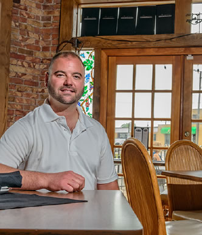

As owners and managers, the Lahey family has shaped their own style of
dining in this growing downtown Toledo locale and has what they call a
“New York-inspired” menu.
Zach is the second oldest of seven children, having graduated from St.
Francis de Sales and Ohio Northern University where he pursued musical
theater. He did quite well through high school and college becoming an
accomplished singer, dancer and actor. He has appeared in an array of
productions and held lead roles in West Side Story, JC Superstar, Hello
Dolly, Guys & Dolls, and Forever Plaid to name a few. So, in 2000 he
moved to New York to pursue his acting career. As most folks who have
also followed this path know, that dream turned into one waiter’s
position after another! While on this track he met Mike, a native New
Yorker. The guys decided to work together to make ends meet. However, in
the aftermath of the 9/11 tragedy, they ran into rough times. They
packed their possessions and hobbled back home to Toledo with every
intention of earning enough cash to return to New York within six
months.
Call it Divine Providence or call it fate, things have a way of taking
their own course. While working here the guys were introduced to the
idea of opening their own restaurant, especially since Mike had chef
training. Enter Zach’s dad, Marty. His first reaction was to advise the
guys that this was a bad idea and they should stay focused on their
original game plan of returning to NY. But soon, even he began to see
the inherent charm and potential of the venue here at 1516 Adams.
The trio began working slowly in the spring of 2002. Things really got
cooking that summer with the dust flying on the inside and the paint
flowing on the outside! Enter Zach’s mom, Barbara whom they snookered
into painting the NY skyline mural (which mushroomed into a sundry of
other odd jobs and continues to this day!). After a brutal autumn
Manhattan’s opened its doors in December. Having never gotten used to
living without subways, Mike eventually moved back east. Zach has found
his footlights as General Manager while also performing on local stages.
Marty has discovered that owning a restaurant is not exactly a
gentlemanly pastime, but is thrilled to achieve his lifelong dream of
running a family business.